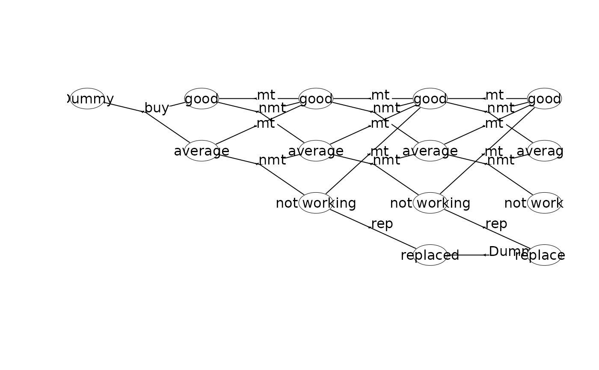
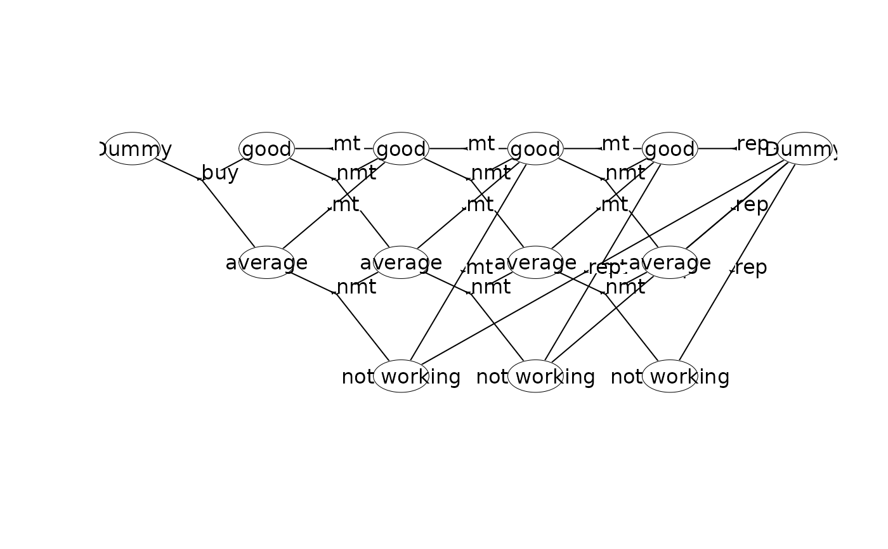

If the MDP has a finite time-horizon then arguments times and eps
are ignored.
Usage
run_value_ite(
mdp,
w,
dur = NULL,
rate = 0,
rate_base = 1,
discount_factor = NULL,
max_ite = 100,
eps = 1e-05,
term_values = NULL,
g = NULL,
objective = c("max", "min"),
bellman_op = c("auto", "expected", "discount", "average", "min", "max",
"second_moment"),
get_log = TRUE,
discount_method = "continuous"
)Arguments
- mdp
The MDP loaded using
load_mdp().- w
The label of the weight we optimize.
- dur
The label of the duration/time such that discount rates can be calculated.
- rate
Interest rate.
- rate_base
The time-horizon the rate is valid over.
- discount_factor
The discount rate for one time unit. If specified
rateandrate_baseare not used to calculate the discount rate.- max_ite
The max number of iterations value iteration is performed.
- eps
Stopping tolerance. If $max(w(t)-w(t+1)) <
eps$ then stop the algorithm, i.e the policy becomes epsilon optimal (see Puterman p161).- term_values
The terminal values used (values of the last stage in the MDP).
- g
Average weight. If specified then do a single iteration using the update equations under the average expected-weight Bellman operator with the specified g value.
- objective
Optimize by maximizing (
"max") or minimizing ("min") the Bellman value.- bellman_op
Bellman operator. Use
"auto"for existing behavior,"min"for the minimum-successor operator,"max"for the maximum-successor operator, or"second_moment"for the second moment of total accumulated weight.- get_log
Output the log messages.
- discount_method
Either 'continuous' or 'discrete', corresponding to discount factor
exp(-rate/rate_base)or1/(1 + rate/rate_base), respectively. Only used ifdiscount_factorisNULL.
Examples
## Set working dir
wd <- setwd(tempdir())
# Create the small machine repleacement problem used as an example in L.R. Nielsen and A.R.
# Kristensen. Finding the K best policies in a finite-horizon Markov decision process. European
# Journal of Operational Research, 175(2):1164-1179, 2006. doi:10.1016/j.ejor.2005.06.011.
## Create the MDP using a dummy replacement node
prefix<-"machine1_"
w <- binary_mdp_writer(prefix)
w$set_weights(c("Net reward"))
w$process()
w$stage() # stage n=0
w$state(label="Dummy") # v=(0,0)
w$action(label="buy", weights=-100, prob=c(1,0,0.7, 1,1,0.3), end=TRUE)
w$end_state()
w$end_stage()
w$stage() # stage n=1
w$state(label="good") # v=(1,0)
w$action(label="mt", weights=55, prob=c(1,0,1), end=TRUE)
w$action(label="nmt", weights=70, prob=c(1,0,0.6, 1,1,0.4), end=TRUE)
w$end_state()
w$state(label="average") # v=(1,1)
w$action(label="mt", weights=40, prob=c(1,0,1), end=TRUE)
w$action(label="nmt", weights=50, prob=c(1,1,0.6, 1,2,0.4), end=TRUE)
w$end_state()
w$end_stage()
w$stage() # stage n=2
w$state(label="good") # v=(2,0)
w$action(label="mt", weights=55, prob=c(1,0,1), end=TRUE)
w$action(label="nmt", weights=70, prob=c(1,0,0.5, 1,1,0.5), end=TRUE)
w$end_state()
w$state(label="average") # v=(2,1)
w$action(label="mt", weights=40, prob=c(1,0,1), end=TRUE)
w$action(label="nmt", weights=50, prob=c(1,1,0.5, 1,2,0.5), end=TRUE)
w$end_state()
w$state(label="not working") # v=(2,2)
w$action(label="mt", weights=30, prob=c(1,0,1), end=TRUE)
w$action(label="rep", weights=5, prob=c(1,3,1), end=TRUE)
w$end_state()
w$end_stage()
w$stage() # stage n=3
w$state(label="good") # v=(3,0)
w$action(label="mt", weights=55, prob=c(1,0,1), end=TRUE)
w$action(label="nmt", weights=70, prob=c(1,0,0.2, 1,1,0.8), end=TRUE)
w$end_state()
w$state(label="average") # v=(3,1)
w$action(label="mt", weights=40, prob=c(1,0,1), end=TRUE)
w$action(label="nmt", weights=50, prob=c(1,1,0.2, 1,2,0.8), end=TRUE)
w$end_state()
w$state(label="not working") # v=(3,2)
w$action(label="mt", weights=30, prob=c(1,0,1), end=TRUE)
w$action(label="rep", weights=5, prob=c(1,3,1), end=TRUE)
w$end_state()
w$state(label="replaced") # v=(3,3)
w$action(label="Dummy", weights=0, prob=c(1,3,1), end=TRUE)
w$end_state()
w$end_stage()
w$stage() # stage n=4
w$state(label="good", end=TRUE) # v=(4,0)
w$state(label="average", end=TRUE) # v=(4,1)
w$state(label="not working", end=TRUE) # v=(4,2)
w$state(label="replaced", end=TRUE) # v=(4,3)
w$end_stage()
w$end_process()
w$close_writer()
#>
#> Statistics:
#> states : 14
#> actions: 18
#> weights: 1
#>
#> Closing binary MDP writer.
#>
## Load the model into memory
mdp<-load_mdp(prefix)
#> Read binary files (0.000163682 sec.)
#> Build the HMDP (4.2423e-05 sec.)
#> Checking MDP and found no errors (1.492e-06 sec.)
mdp
#> $bin_names
#> [1] "machine1_stateIdx.bin" "machine1_stateIdxLbl.bin"
#> [3] "machine1_actionIdx.bin" "machine1_actionIdxLbl.bin"
#> [5] "machine1_actionWeight.bin" "machine1_actionWeightLbl.bin"
#> [7] "machine1_transProb.bin" "machine1_externalProcesses.bin"
#> [9] "machine1_transWeight.bin" "machine1_transWeightLbl.bin"
#>
#> $time_horizon
#> [1] 5
#>
#> $states
#> [1] 14
#>
#> $founder_states_last
#> [1] 4
#>
#> $actions
#> [1] 18
#>
#> $levels
#> [1] 1
#>
#> $weight_names
#> [1] "Net reward"
#>
#> $weight_action_names
#> [1] "Net reward"
#>
#> $weight_trans_names
#> character(0)
#>
#> $ptr
#> C++ object <0x557d7a276910> of class 'HMDP' <0x557d77f7bab0>
#>
#> attr(,"class")
#> [1] "HMDP" "list"
plot(mdp)

get_info(mdp, with_list = FALSE)
#> $df
#> # A tibble: 14 × 4
#> s_id state_str label actions
#> <dbl> <chr> <chr> <list>
#> 1 0 4,0 good <NULL>
#> 2 1 4,1 average <NULL>
#> 3 2 4,2 not working <NULL>
#> 4 3 4,3 replaced <NULL>
#> 5 4 3,0 good <list [2]>
#> 6 5 3,1 average <list [2]>
#> 7 6 3,2 not working <list [2]>
#> 8 7 3,3 replaced <list [1]>
#> 9 8 2,0 good <list [2]>
#> 10 9 2,1 average <list [2]>
#> 11 10 2,2 not working <list [2]>
#> 12 11 1,0 good <list [2]>
#> 13 12 1,1 average <list [2]>
#> 14 13 0,0 Dummy <list [1]>
#>
get_info(mdp, with_list = FALSE, df_level = "action", as_strings_actions = TRUE)
#> $df
#> # A tibble: 18 × 9
#> s_id state_str label a_idx label_action weights trans_weights trans pr
#> <dbl> <chr> <chr> <dbl> <chr> <chr> <lgl> <chr> <chr>
#> 1 4 3,0 good 0 mt 55 NA 0 1
#> 2 4 3,0 good 1 nmt 70 NA 0,1 0.2,…
#> 3 5 3,1 average 0 mt 40 NA 0 1
#> 4 5 3,1 average 1 nmt 50 NA 1,2 0.2,…
#> 5 6 3,2 not wor… 0 mt 30 NA 0 1
#> 6 6 3,2 not wor… 1 rep 5 NA 3 1
#> 7 7 3,3 replaced 0 Dummy 0 NA 3 1
#> 8 8 2,0 good 0 mt 55 NA 4 1
#> 9 8 2,0 good 1 nmt 70 NA 4,5 0.5,…
#> 10 9 2,1 average 0 mt 40 NA 4 1
#> 11 9 2,1 average 1 nmt 50 NA 5,6 0.5,…
#> 12 10 2,2 not wor… 0 mt 30 NA 4 1
#> 13 10 2,2 not wor… 1 rep 5 NA 7 1
#> 14 11 1,0 good 0 mt 55 NA 8 1
#> 15 11 1,0 good 1 nmt 70 NA 8,9 0.6,…
#> 16 12 1,1 average 0 mt 40 NA 8 1
#> 17 12 1,1 average 1 nmt 50 NA 9,10 0.6,…
#> 18 13 0,0 Dummy 0 buy -100 NA 11,12 0.7,…
#>
get_info(mdp, with_list = FALSE, df_level = "action", as_strings_actions = FALSE)
#> $df
#> # A tibble: 18 × 9
#> s_id state_str label a_idx label_action weights trans_weights trans pr
#> <dbl> <chr> <chr> <dbl> <chr> <dbl> <lgl> <lis> <lis>
#> 1 4 3,0 good 0 mt 55 NA <dbl> <dbl>
#> 2 4 3,0 good 1 nmt 70 NA <dbl> <dbl>
#> 3 5 3,1 average 0 mt 40 NA <dbl> <dbl>
#> 4 5 3,1 average 1 nmt 50 NA <dbl> <dbl>
#> 5 6 3,2 not wor… 0 mt 30 NA <dbl> <dbl>
#> 6 6 3,2 not wor… 1 rep 5 NA <dbl> <dbl>
#> 7 7 3,3 replaced 0 Dummy 0 NA <dbl> <dbl>
#> 8 8 2,0 good 0 mt 55 NA <dbl> <dbl>
#> 9 8 2,0 good 1 nmt 70 NA <dbl> <dbl>
#> 10 9 2,1 average 0 mt 40 NA <dbl> <dbl>
#> 11 9 2,1 average 1 nmt 50 NA <dbl> <dbl>
#> 12 10 2,2 not wor… 0 mt 30 NA <dbl> <dbl>
#> 13 10 2,2 not wor… 1 rep 5 NA <dbl> <dbl>
#> 14 11 1,0 good 0 mt 55 NA <dbl> <dbl>
#> 15 11 1,0 good 1 nmt 70 NA <dbl> <dbl>
#> 16 12 1,1 average 0 mt 40 NA <dbl> <dbl>
#> 17 12 1,1 average 1 nmt 50 NA <dbl> <dbl>
#> 18 13 0,0 Dummy 0 buy -100 NA <dbl> <dbl>
#>
## Perform value iteration
w<-"Net reward" # label of the weight we want to optimize
scrapValues<-c(30,10,5,0) # scrap values (the values of the 4 states at stage 4)
run_value_ite(mdp, w, term_values=scrapValues)
#> Run value iteration with epsilon = 0 at most 1 time(s)
#> using weight 'Net reward' under expected-weight Bellman operator.
#> Finished. Cpu time 9.324e-06 sec.
get_policy(mdp) # optimal policy
#> # A tibble: 14 × 6
#> s_id state_str state_label a_idx action_label weight
#> <dbl> <chr> <chr> <int> <chr> <dbl>
#> 1 0 4,0 good -1 "" 30
#> 2 1 4,1 average -1 "" 10
#> 3 2 4,2 not working -1 "" 5
#> 4 3 4,3 replaced -1 "" 0
#> 5 4 3,0 good 0 "mt" 85
#> 6 5 3,1 average 0 "mt" 70
#> 7 6 3,2 not working 0 "mt" 60
#> 8 7 3,3 replaced 0 "Dummy" 0
#> 9 8 2,0 good 1 "nmt" 148.
#> 10 9 2,1 average 0 "mt" 125
#> 11 10 2,2 not working 0 "mt" 115
#> 12 11 1,0 good 1 "nmt" 208.
#> 13 12 1,1 average 0 "mt" 188.
#> 14 13 0,0 Dummy 0 "buy" 102.
## Calculate the weights of the policy always to maintain
library(magrittr)
policy <- get_info(mdp, with_list = FALSE, df_level = "action")$df %>%
dplyr::filter(label_action == "mt") %>%
dplyr::select(s_id, a_idx)
set_policy(mdp, policy)
run_calc_weights(mdp, w, term_values=scrapValues)
get_policy(mdp)
#> # A tibble: 14 × 6
#> s_id state_str state_label a_idx action_label weight
#> <dbl> <chr> <chr> <int> <chr> <dbl>
#> 1 0 4,0 good -1 "" 30
#> 2 1 4,1 average -1 "" 10
#> 3 2 4,2 not working -1 "" 5
#> 4 3 4,3 replaced -1 "" 0
#> 5 4 3,0 good 0 "mt" 85
#> 6 5 3,1 average 0 "mt" 70
#> 7 6 3,2 not working 0 "mt" 60
#> 8 7 3,3 replaced 0 "Dummy" 0
#> 9 8 2,0 good 0 "mt" 140
#> 10 9 2,1 average 0 "mt" 125
#> 11 10 2,2 not working 0 "mt" 115
#> 12 11 1,0 good 0 "mt" 195
#> 13 12 1,1 average 0 "mt" 180
#> 14 13 0,0 Dummy 0 "buy" 90.5
# The example given in L.R. Nielsen and A.R. Kristensen. Finding the K best
# policies in a finite-horizon Markov decision process. European Journal of
# Operational Research, 175(2):1164-1179, 2006. doi:10.1016/j.ejor.2005.06.011,
# does actually not have any dummy replacement node as in the MDP above. The same
# model can be created using a single dummy node at the end of the process.
## Create the MDP using a single dummy node
prefix<-"machine2_"
w <- binary_mdp_writer(prefix)
w$set_weights(c("Net reward"))
w$process()
w$stage() # stage n=0
w$state(label="Dummy") # v=(0,0)
w$action(label="buy", weights=-100, prob=c(1,0,0.7, 1,1,0.3), end=TRUE)
w$end_state()
w$end_stage()
w$stage() # stage n=1
w$state(label="good") # v=(1,0)
w$action(label="mt", weights=55, prob=c(1,0,1), end=TRUE)
w$action(label="nmt", weights=70, prob=c(1,0,0.6, 1,1,0.4), end=TRUE)
w$end_state()
w$state(label="average") # v=(1,1)
w$action(label="mt", weights=40, prob=c(1,0,1), end=TRUE)
w$action(label="nmt", weights=50, prob=c(1,1,0.6, 1,2,0.4), end=TRUE)
w$end_state()
w$end_stage()
w$stage() # stage n=2
w$state(label="good") # v=(2,0)
w$action(label="mt", weights=55, prob=c(1,0,1), end=TRUE)
w$action(label="nmt", weights=70, prob=c(1,0,0.5, 1,1,0.5), end=TRUE)
w$end_state()
w$state(label="average") # v=(2,1)
w$action(label="mt", weights=40, prob=c(1,0,1), end=TRUE)
w$action(label="nmt", weights=50, prob=c(1,1,0.5, 1,2,0.5), end=TRUE)
w$end_state()
w$state(label="not working") # v=(2,2)
w$action(label="mt", weights=30, prob=c(1,0,1), end=TRUE)
w$action(label="rep", weights=5, prob=c(3,12,1), end=TRUE) # transition to s_id=12 (Dummy)
w$end_state()
w$end_stage()
w$stage() # stage n=3
w$state(label="good") # v=(3,0)
w$action(label="mt", weights=55, prob=c(1,0,1), end=TRUE)
w$action(label="nmt", weights=70, prob=c(1,0,0.2, 1,1,0.8), end=TRUE)
w$end_state()
w$state(label="average") # v=(3,1)
w$action(label="mt", weights=40, prob=c(1,0,1), end=TRUE)
w$action(label="nmt", weights=50, prob=c(1,1,0.2, 1,2,0.8), end=TRUE)
w$end_state()
w$state(label="not working") # v=(3,2)
w$action(label="mt", weights=30, prob=c(1,0,1), end=TRUE)
w$action(label="rep", weights=5, prob=c(3,12,1), end=TRUE)
w$end_state()
w$end_stage()
w$stage() # stage n=4
w$state(label="good") # v=(4,0)
w$action(label="rep", weights=30, prob=c(1,0,1), end=TRUE)
w$end_state()
w$state(label="average") # v=(4,1)
w$action(label="rep", weights=10, prob=c(1,0,1), end=TRUE)
w$end_state()
w$state(label="not working") # v=(4,2)
w$action(label="rep", weights=5, prob=c(1,0,1), end=TRUE)
w$end_state()
w$end_stage()
w$stage() # stage n=5
w$state(label="Dummy", end=TRUE) # v=(5,0)
w$end_stage()
w$end_process()
w$close_writer()
#>
#> Statistics:
#> states : 13
#> actions: 20
#> weights: 1
#>
#> Closing binary MDP writer.
#>
## Have a look at the state-expanded hypergraph
mdp<-load_mdp(prefix)
#> Read binary files (0.00018932 sec.)
#> Build the HMDP (4.6769e-05 sec.)
#> Checking MDP and found no errors (2.644e-06 sec.)
mdp
#> $bin_names
#> [1] "machine2_stateIdx.bin" "machine2_stateIdxLbl.bin"
#> [3] "machine2_actionIdx.bin" "machine2_actionIdxLbl.bin"
#> [5] "machine2_actionWeight.bin" "machine2_actionWeightLbl.bin"
#> [7] "machine2_transProb.bin" "machine2_externalProcesses.bin"
#> [9] "machine2_transWeight.bin" "machine2_transWeightLbl.bin"
#>
#> $time_horizon
#> [1] 6
#>
#> $states
#> [1] 13
#>
#> $founder_states_last
#> [1] 1
#>
#> $actions
#> [1] 20
#>
#> $levels
#> [1] 1
#>
#> $weight_names
#> [1] "Net reward"
#>
#> $weight_action_names
#> [1] "Net reward"
#>
#> $weight_trans_names
#> character(0)
#>
#> $ptr
#> C++ object <0x557d783d4150> of class 'HMDP' <0x557d77f7bab0>
#>
#> attr(,"class")
#> [1] "HMDP" "list"
plot(mdp)

get_info(mdp, with_list = FALSE)
#> $df
#> # A tibble: 13 × 4
#> s_id state_str label actions
#> <dbl> <chr> <chr> <list>
#> 1 0 5,0 Dummy <NULL>
#> 2 1 4,0 good <list [1]>
#> 3 2 4,1 average <list [1]>
#> 4 3 4,2 not working <list [1]>
#> 5 4 3,0 good <list [2]>
#> 6 5 3,1 average <list [2]>
#> 7 6 3,2 not working <list [2]>
#> 8 7 2,0 good <list [2]>
#> 9 8 2,1 average <list [2]>
#> 10 9 2,2 not working <list [2]>
#> 11 10 1,0 good <list [2]>
#> 12 11 1,1 average <list [2]>
#> 13 12 0,0 Dummy <list [1]>
#>
get_info(mdp, with_list = FALSE, df_level = "action", as_strings_actions = TRUE)
#> $df
#> # A tibble: 20 × 9
#> s_id state_str label a_idx label_action weights trans_weights trans pr
#> <dbl> <chr> <chr> <dbl> <chr> <chr> <lgl> <chr> <chr>
#> 1 1 4,0 good 0 rep 30 NA 0 1
#> 2 2 4,1 average 0 rep 10 NA 0 1
#> 3 3 4,2 not wor… 0 rep 5 NA 0 1
#> 4 4 3,0 good 0 mt 55 NA 1 1
#> 5 4 3,0 good 1 nmt 70 NA 1,2 0.2,…
#> 6 5 3,1 average 0 mt 40 NA 1 1
#> 7 5 3,1 average 1 nmt 50 NA 2,3 0.2,…
#> 8 6 3,2 not wor… 0 mt 30 NA 1 1
#> 9 6 3,2 not wor… 1 rep 5 NA 0 1
#> 10 7 2,0 good 0 mt 55 NA 4 1
#> 11 7 2,0 good 1 nmt 70 NA 4,5 0.5,…
#> 12 8 2,1 average 0 mt 40 NA 4 1
#> 13 8 2,1 average 1 nmt 50 NA 5,6 0.5,…
#> 14 9 2,2 not wor… 0 mt 30 NA 4 1
#> 15 9 2,2 not wor… 1 rep 5 NA 0 1
#> 16 10 1,0 good 0 mt 55 NA 7 1
#> 17 10 1,0 good 1 nmt 70 NA 7,8 0.6,…
#> 18 11 1,1 average 0 mt 40 NA 7 1
#> 19 11 1,1 average 1 nmt 50 NA 8,9 0.6,…
#> 20 12 0,0 Dummy 0 buy -100 NA 10,11 0.7,…
#>
get_info(mdp, with_list = FALSE, df_level = "action", as_strings_actions = FALSE)
#> $df
#> # A tibble: 20 × 9
#> s_id state_str label a_idx label_action weights trans_weights trans pr
#> <dbl> <chr> <chr> <dbl> <chr> <dbl> <lgl> <lis> <lis>
#> 1 1 4,0 good 0 rep 30 NA <dbl> <dbl>
#> 2 2 4,1 average 0 rep 10 NA <dbl> <dbl>
#> 3 3 4,2 not wor… 0 rep 5 NA <dbl> <dbl>
#> 4 4 3,0 good 0 mt 55 NA <dbl> <dbl>
#> 5 4 3,0 good 1 nmt 70 NA <dbl> <dbl>
#> 6 5 3,1 average 0 mt 40 NA <dbl> <dbl>
#> 7 5 3,1 average 1 nmt 50 NA <dbl> <dbl>
#> 8 6 3,2 not wor… 0 mt 30 NA <dbl> <dbl>
#> 9 6 3,2 not wor… 1 rep 5 NA <dbl> <dbl>
#> 10 7 2,0 good 0 mt 55 NA <dbl> <dbl>
#> 11 7 2,0 good 1 nmt 70 NA <dbl> <dbl>
#> 12 8 2,1 average 0 mt 40 NA <dbl> <dbl>
#> 13 8 2,1 average 1 nmt 50 NA <dbl> <dbl>
#> 14 9 2,2 not wor… 0 mt 30 NA <dbl> <dbl>
#> 15 9 2,2 not wor… 1 rep 5 NA <dbl> <dbl>
#> 16 10 1,0 good 0 mt 55 NA <dbl> <dbl>
#> 17 10 1,0 good 1 nmt 70 NA <dbl> <dbl>
#> 18 11 1,1 average 0 mt 40 NA <dbl> <dbl>
#> 19 11 1,1 average 1 nmt 50 NA <dbl> <dbl>
#> 20 12 0,0 Dummy 0 buy -100 NA <dbl> <dbl>
#>
## Perform value iteration
w<-"Net reward" # label of the weight we want to optimize
run_value_ite(mdp, w, term_values = 0)
#> Run value iteration with epsilon = 0 at most 1 time(s)
#> using weight 'Net reward' under expected-weight Bellman operator.
#> Finished. Cpu time 1.0175e-05 sec.
get_policy(mdp) # optimal policy
#> # A tibble: 13 × 6
#> s_id state_str state_label a_idx action_label weight
#> <dbl> <chr> <chr> <int> <chr> <dbl>
#> 1 0 5,0 Dummy -1 "" 0
#> 2 1 4,0 good 0 "rep" 30
#> 3 2 4,1 average 0 "rep" 10
#> 4 3 4,2 not working 0 "rep" 5
#> 5 4 3,0 good 0 "mt" 85
#> 6 5 3,1 average 0 "mt" 70
#> 7 6 3,2 not working 0 "mt" 60
#> 8 7 2,0 good 1 "nmt" 148.
#> 9 8 2,1 average 0 "mt" 125
#> 10 9 2,2 not working 0 "mt" 115
#> 11 10 1,0 good 1 "nmt" 208.
#> 12 11 1,1 average 0 "mt" 188.
#> 13 12 0,0 Dummy 0 "buy" 102.
## Calculate the weights of the policy always to maintain
library(magrittr)
policy <- get_info(mdp, with_list = FALSE, df_level = "action")$df %>%
dplyr::filter(label_action == "mt") %>%
dplyr::select(s_id, a_idx)
set_policy(mdp, policy)
run_calc_weights(mdp, w, term_values=scrapValues)
get_policy(mdp)
#> # A tibble: 13 × 6
#> s_id state_str state_label a_idx action_label weight
#> <dbl> <chr> <chr> <int> <chr> <dbl>
#> 1 0 5,0 Dummy -1 "" 0
#> 2 1 4,0 good 0 "rep" 30
#> 3 2 4,1 average 0 "rep" 10
#> 4 3 4,2 not working 0 "rep" 5
#> 5 4 3,0 good 0 "mt" 85
#> 6 5 3,1 average 0 "mt" 70
#> 7 6 3,2 not working 0 "mt" 60
#> 8 7 2,0 good 0 "mt" 140
#> 9 8 2,1 average 0 "mt" 125
#> 10 9 2,2 not working 0 "mt" 115
#> 11 10 1,0 good 0 "mt" 195
#> 12 11 1,1 average 0 "mt" 180
#> 13 12 0,0 Dummy 0 "buy" 90.5
## Reset working dir
setwd(wd)